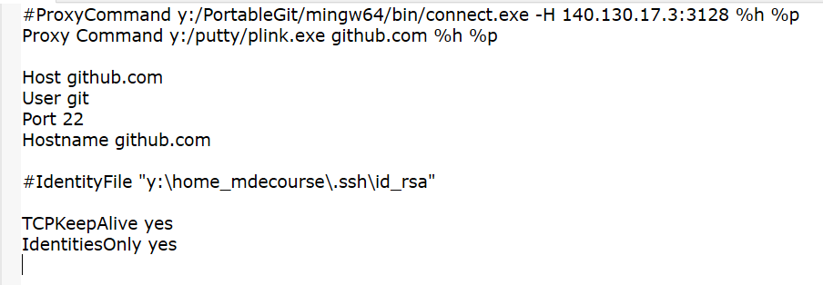
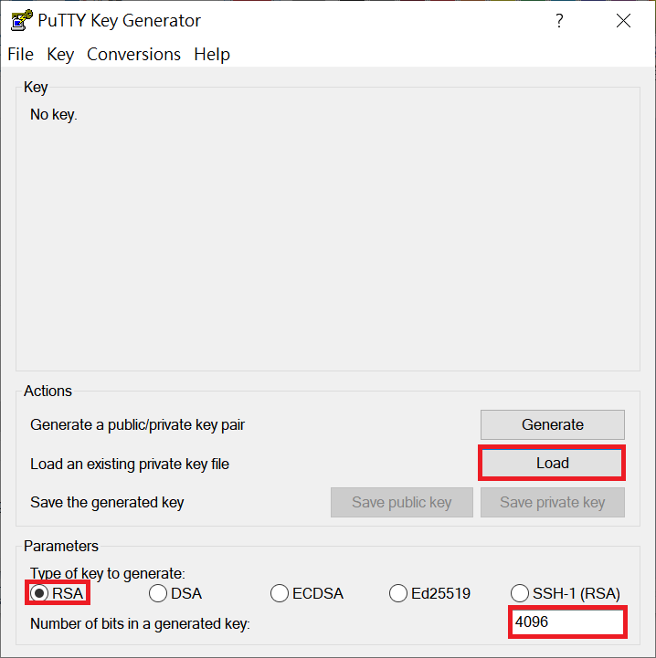
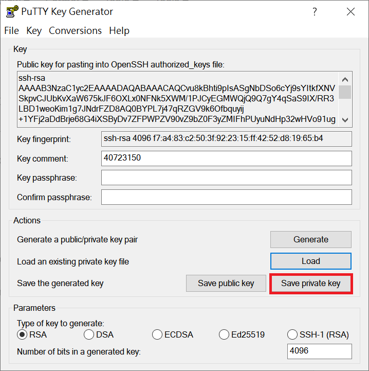
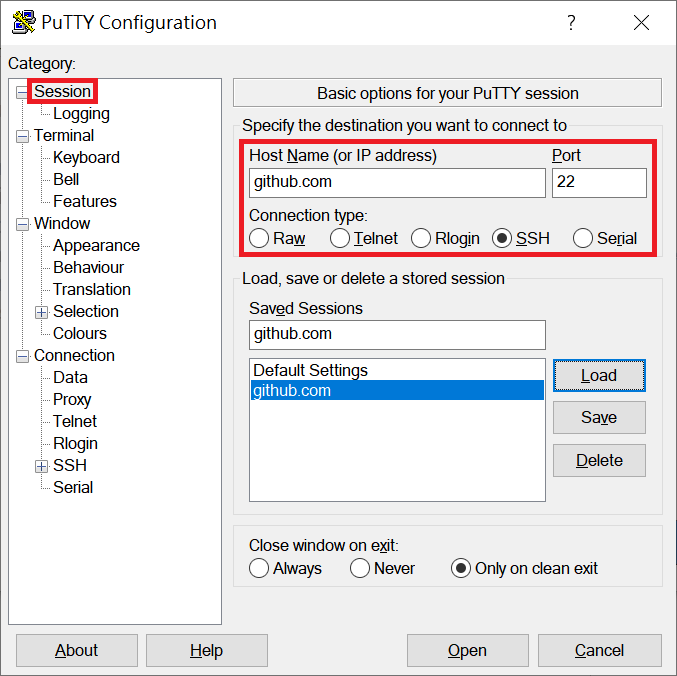
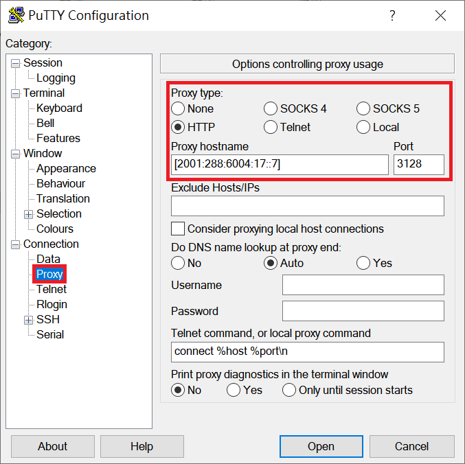
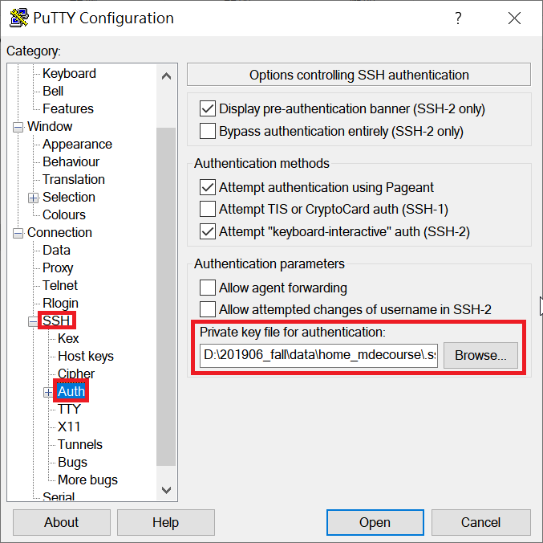
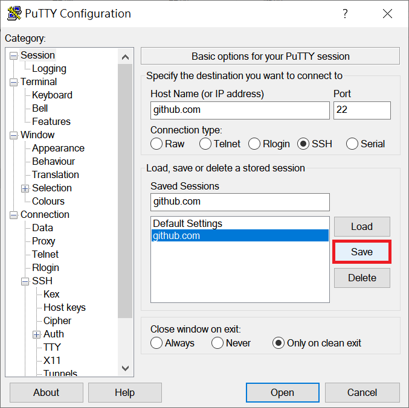

Develop <<
Previous Next >> Solvespace
SSH
批次檔設定
執行隨身碟 SciTE.exe ( 位於 201906_fall\data\wscite415\wscite 目錄下 )
開啟 start_mdecourse.bat 並加入
REM for putty
Set GIT_HOME=%Cdisk%:\portablegit\bin\
Set GIT_SSH=%Disk%:\putty\plink.exe
SSH 設定
到 .ssh 的目錄下
編輯 config,插入
Proxy Command y:/putty/plink.exe github.com %h %p
並註解掉
IdentityFile "y:\home_mdecourse\.ssh\id_rsa"

設定 SSH key 的使用配置 ( 使用 Ipv 6 網路 )
先下載 putty , 放到可攜系統的 data 目錄底下
Key 轉換 ( 此設定方法是拿先前的 Open SSH key )
先建立一個 key ( 若之前已經有 Open SSH 的 key 就可以直接用那把 key )
執行 puttygen.exe
載入一個 Open SSH 的 key

*p.s. 若是使用之前的 key , bits 數請寄的設定為 4096 , 轉換成的類型請設定成 rsa
轉存成 rsa 的 prviate key ( ppk檔 )

Putty 設定
執行 putty.exe
建立一個 session 叫 github.com
Host Name : github.com
Port : 22
Connection type : SSH

設定 proxy
Proxy type : HTTP
Proxy hostname : [2001:288:6004:17::7] Port : 3128
Do DNS name lookup at proxy end : Auto
Username : kmolab
Password : kmolab

設定 SSH 底下的 Auth
Private key file for authentication : ( 請指定 rsa-key 的位置 )

*p.s. 需指定 ppk 檔
儲存 session 設定

Develop <<
Previous Next >> Solvespace